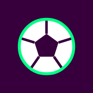

v0.14.9Football, not soccer
Tabellen, matcherna och ditt lag – utan reklam, utan konto, utan brus.
Tre principer bakom appen
Ett tydligt fokus
Appen svarar på en enda fråga: hur går det för mitt lag? Allt annat väljs aktivt bort.
Integritet först
Ingen inloggning, ingen spårning. Data stannar på telefonen och strikt CSP stänger ute allt externt.
Ren webb
HTML, CSS och vanlig JavaScript. Inga byggsteg – hela appen kan levereras som en enda fil.
Football, not soccer
#4c8c2bDet du kollar tio gånger om dagen – inget annat.
- Matcher: aktuella, kommande och spelade, live med minut
- Tabell med zoner för Europa och nedflyttning
- Följ ett lag i alla tävlingar: liga, cuper och Europa
- 16 ligor och turneringar – du väljer vilka som syns
- Krypterad backup av inställningar, offline, ljust och mörkt
Skiss med påhittade matcher
Ett enda, godkänt undantag
Resultat kan inte byggas in i förväg. Därför får appen läsa från en källa – och bara på ett sätt.
site.api.espn.com och klubbmärken från a.espncdn.com. Inga nycklar, inget konto.Litet med flit
Senast hämtad data visas om nätet saknas – aldrig en blank skärm.
Mot de stora resultatapparna
| Football, not soccer | Typisk resultatapp | |
|---|---|---|
| Reklam och spårning | Ingen | Ja, i gratisversionen |
| Startskärm | Din liga, direkt | Hela världens matcher |
| Storlek | Några hundra kB | Tiotals MB |
| Notiser vid mål | Nej – ingen server | Bättre |
| Statistik, uppställningar, xG | Nej | Bättre |
| Datakälla | Öppet API, kan ändras utan förvarning | Bättre – officiella avtal |
Säkerhetstestad
Automatiska tester körs före varje commit och push. Underkänt test = ingen release.
Säkerhetskontroll
- Strikt innehållspolicyingen kod utifrån, inga inline-skript.
- Bara godkänd källaESPN:s värdar, utan cookies och referer, med tidsgräns och storlekstak.
- Bara egen lagringegna nycklar i telefonen, inga farliga API:er som eval.
- Service workercachar bara appens egna filer.
- Krypterad backupAES-256-GCM, PBKDF2 600 000 varv, lösenordet sparas aldrig.
Funktionstester
- Import validerasfel app, fel format och manipulerade fält avvisas.
- Text, aldrig HTMLdata visas som text – inget kan köras via innehåll.
- ESPN-svar kontrollerasokända tävlingar, felaktiga lag-id, färger och klubbmärken från andra värdar stoppas.
- Fel och offlinesparad data visas, aldrig en blank skärm.
- Export och raderingbara inställningar i backupen; radera tar bara appens egna data.
- Inget nät i testernaESPN fejkas – testerna går aldrig ut på nätet.
Material Design 3, byggd för mobilen
Färg via roller
Nyckelfärgen styr allt. Ljust och mörkt tema följer telefonen. Nästan kantigt och tätt.
Bottenmeny för tummen · tryckytor ≥ 48 px · systemtypsnitt
Samma struktur, varje gång
index.html styles.css app.js store.js version.js sw.js docs/ SPEC · MANUAL · presentation tools/ tester · bygge dist/ testfil med allt inbakat
- SPEC först – idé, mål, icke-mål
- Säkerhet: förhandsprövning före bygget, efterkontroll före push
- Release kör kontroll och alla tester – underkänt stoppar
- Det som blir bättre här förs in i alla appar
Installera på 30 sekunder
- Öppna adressen i Chrome på mobilen:
flyinggooner.github.io/Football-not-soccer - Tryck på ⋮ och välj Installera app. På iPhone: Dela → Lägg till på hemskärmen.
- Öppna appen från hemskärmen. Den startar i eget fönster.
Football,
not soccer.
Din liga, ditt lag – och ingenting annat.